Moje projekty
Co tworzę
Narzędzia do automatyzacji, aplikacje desktopowe i interfejsy dla systemów technicznych. Zajmuję się wymaganiami, przepływem danych, integracją modułów i testowaniem. Projekty rozwijam na podstawie własnych potrzeb i informacji od użytkowników.
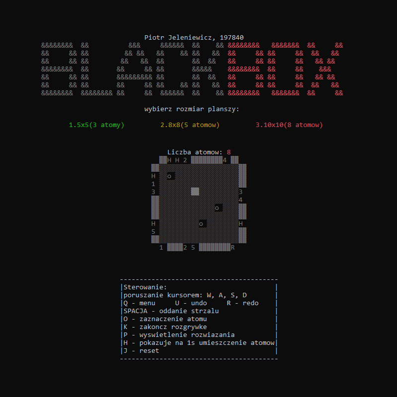
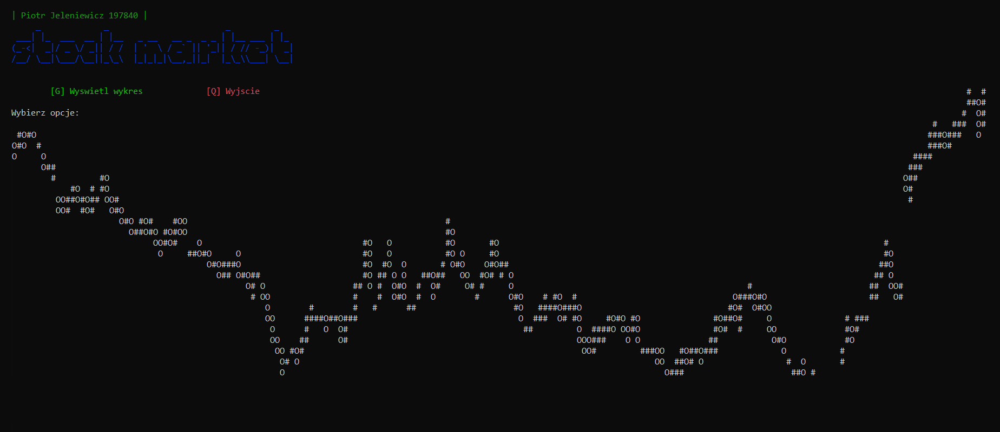
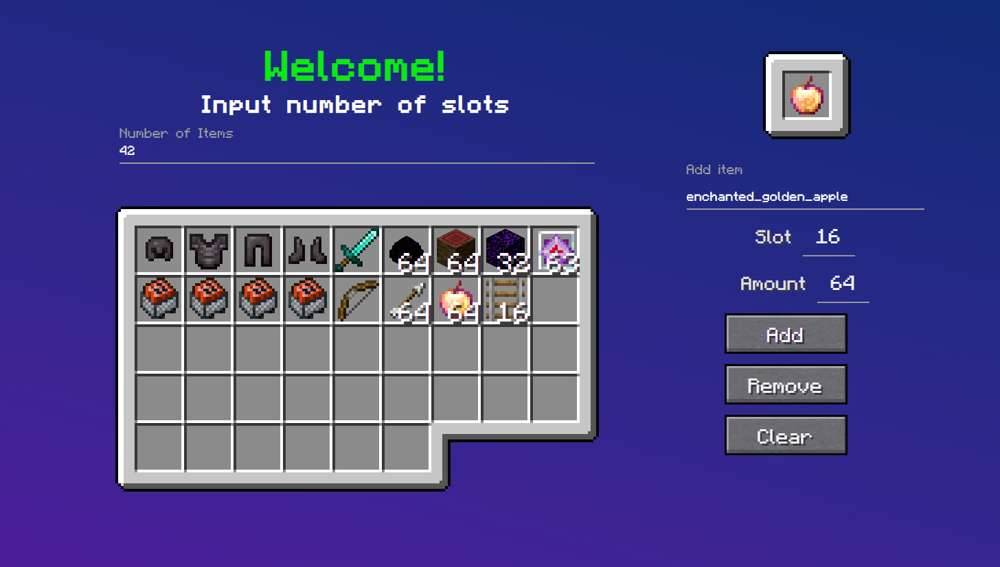
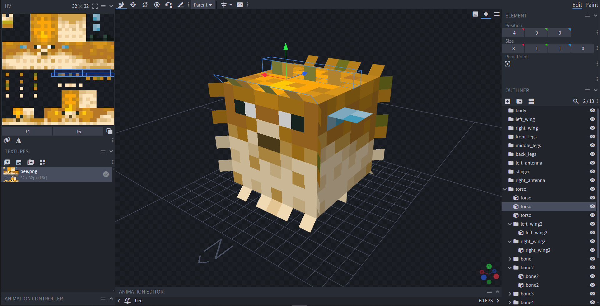
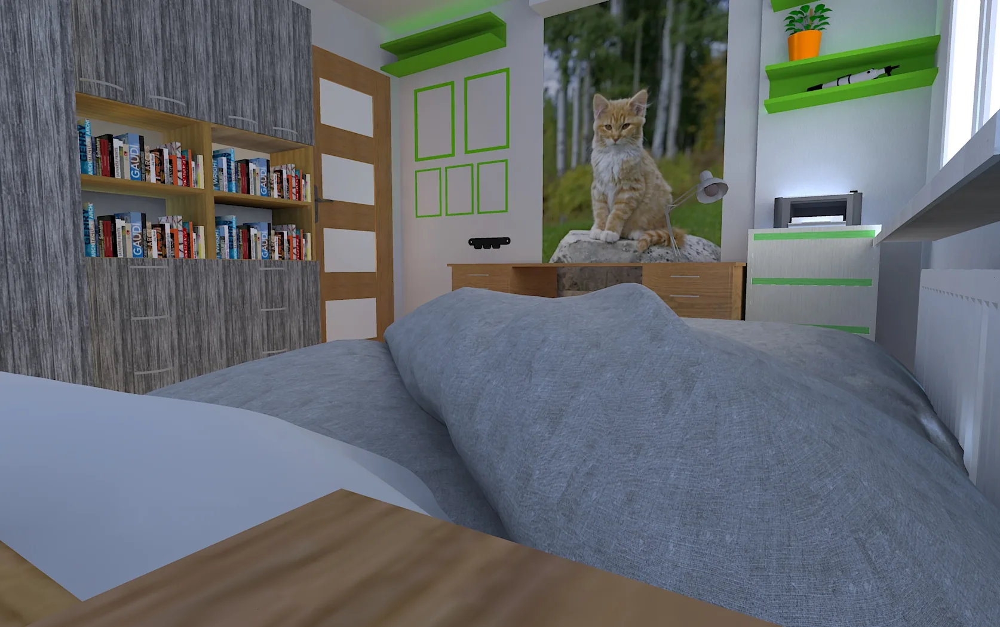
Najważniejsze umiejętności
Od układów do kodu
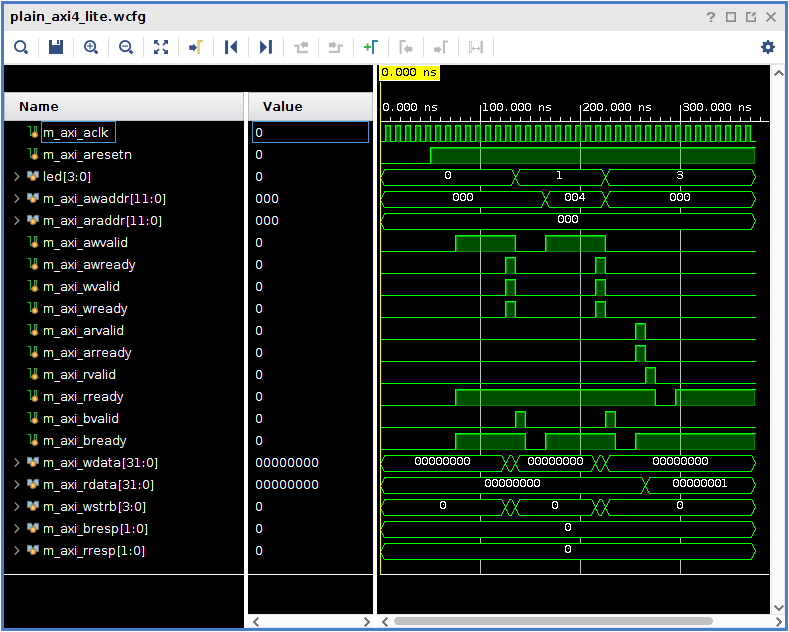
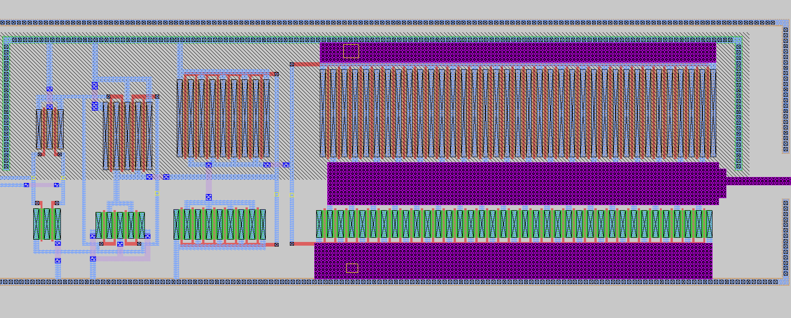
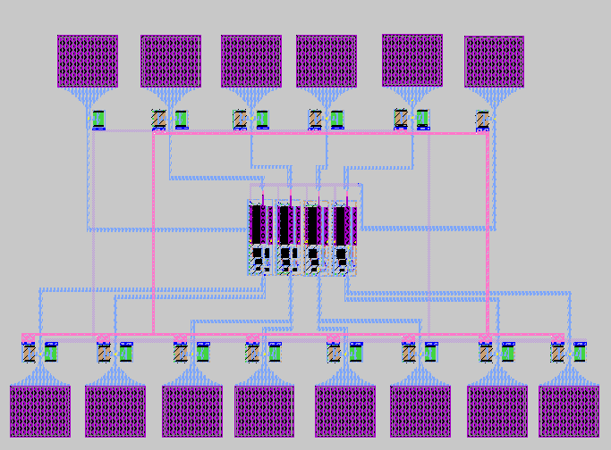
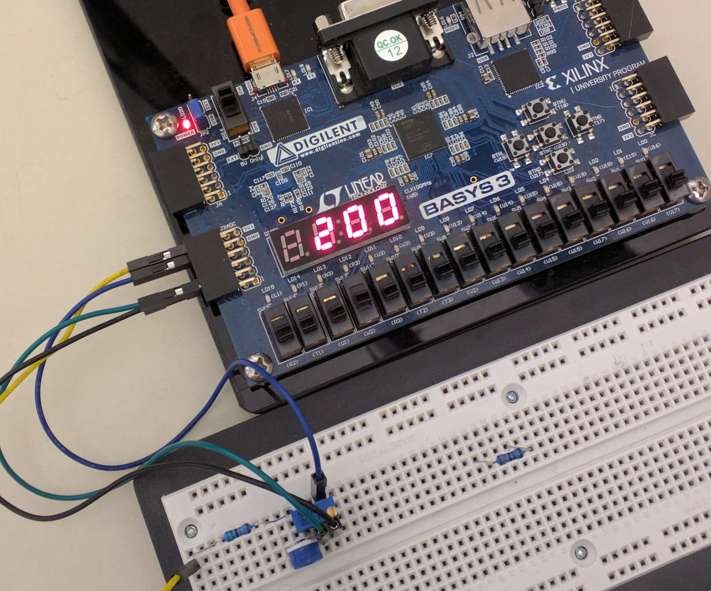
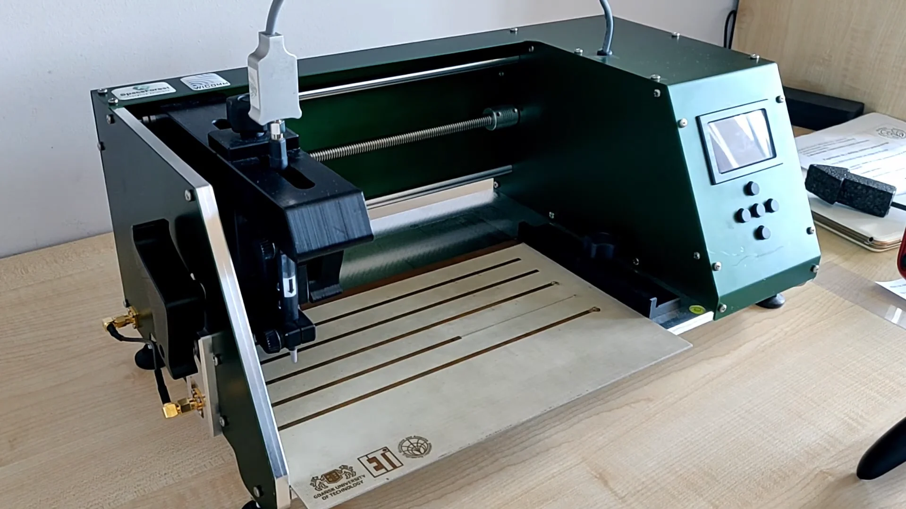
Praktyka laboratoryjna obejmuje pomiary, symulację układów i projektowanie PCB. Pracuję z LTspice, Micro-Cap, EAGLE, KiCad i Vivado. Interesuje mnie rozwój systemów łączących elektronikę z oprogramowaniem.
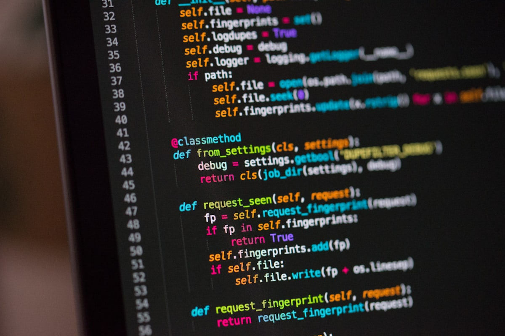
Python i JavaScript wykorzystuję do tworzenia narzędzi, integracji API i przetwarzania danych. C/C++ oraz Java to także projekty i zajęcia z programowania obiektowego. Łączę implementację, pracę nad interfejsem i testowanie funkcjonalności.
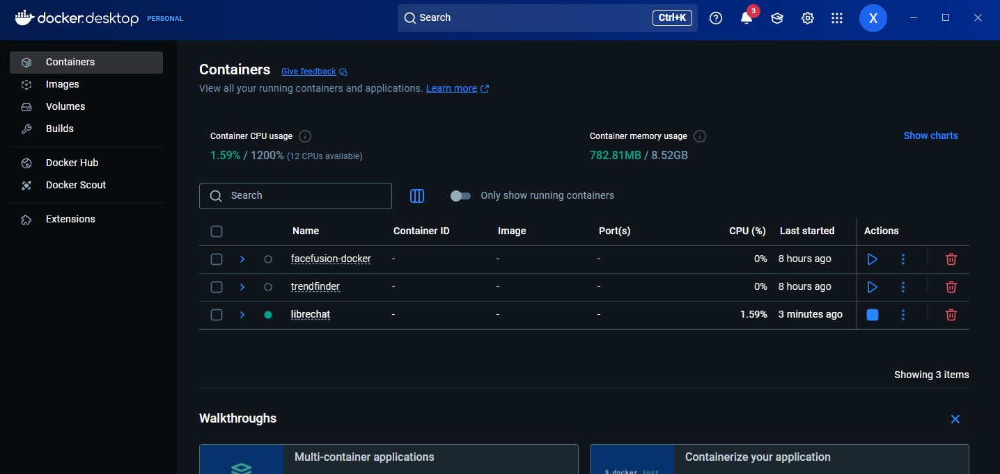
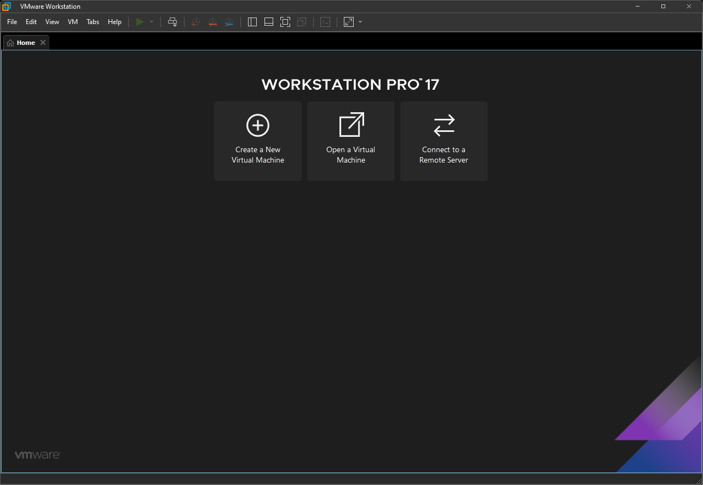
Pracuję ze środowiskami Windows, Windows Server i maszynami wirtualnymi. Korzystam z Git, Linux i Docker w pracy projektowej, a AutoHotkey wykorzystuję do automatyzacji codziennych zadań.
Edukacja i doświadczenie
Od nauki do praktyki
2023 - obecnie | planowane ukończenie: 02.2027
Politechnika GdańskaElektronika i TelekomunikacjaStrumień: ElektronikaSpecjalność: Komputerowe Systemy Elektroniczne
W zespole SeeSky koła naukowego SimLE jestem główną osobą odpowiedzialną za oprogramowanie radioteleskopu. Rozwijam frontend i backend aplikacji do jego obsługi, w tym interaktywną wizualizację nieba. Kolejny etap projektu obejmuje integrację aplikacji ze sprzętem i odbiornikiem SDR.
2024.09 - 2024.10
ASSECOPion Telekomunikacji i Mediów
- Przygotowanie i konfiguracja środowiska Windows Server 2019 na potrzeby rozwiązania do obsługi certyfikatów.
- Opracowanie endpointu REST do przyjmowania żądań w projekcie wykorzystującym Microsoft AD CS i komunikację DCOM.
- Przygotowanie instrukcji konfiguracji środowiska i dokumentacji technicznej do dalszych prac nad integracją.
2019-2023
III Liceum Ogólnokształcące w SopocieProfil politechniczny (matematyka i informatyka)
Profil politechniczny dał mi solidne podstawy z matematyki i informatyki. W liceum zacząłem też wykorzystywać tę wiedzę w praktyce, tworząc pierwsze projekty IT.
Portfolio
Moje projekty
JobManager
Używany i rozwijanyJobManager agreguje oferty z wielu portali, udostępnia wspólne filtry i analizę ofert z AI oraz wysyła powiadomienia. Rozwijam go na podstawie codziennego użycia, łącząc pobieranie danych, integracje API i interfejs użytkownika.
- Agregacja ofert z wielu portali w jednej aplikacji
- Filtrowanie wyników i analiza ofert z Gemini API
- Modułowa obsługa źródeł danych i integracji
- Powiadomienia o ofertach dopasowanych do kryteriów
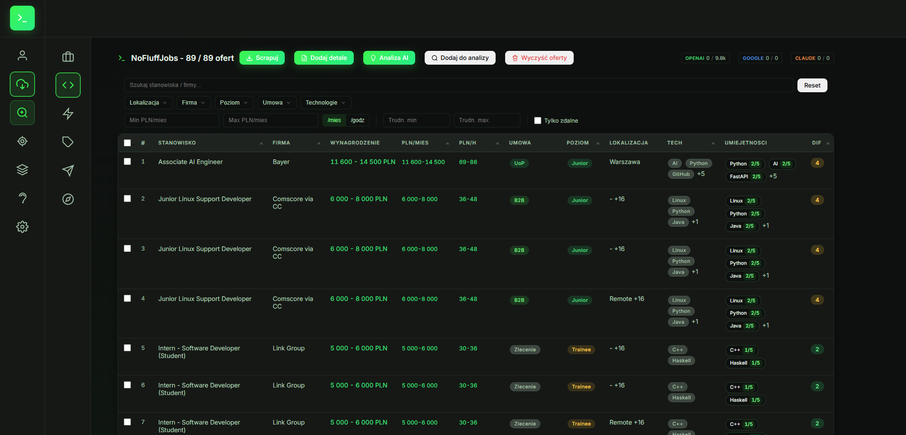
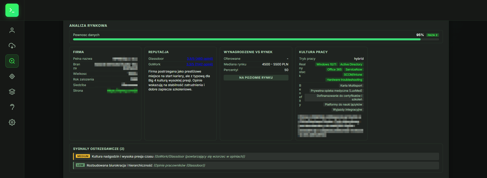
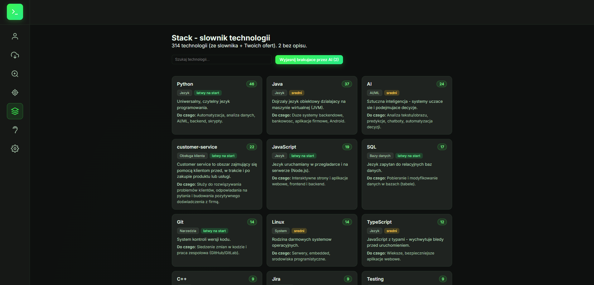
LabInc: Chemical Tycoon
Projekt własnyGra incremental w Javie, w której gracz rozwija produkcję pierwiastków chemicznych. Projekt obejmuje model obiektowy, logikę ekonomii, zarządzanie stanem gry i interfejs Swing.
- Logika ekonomii i rozbudowy produkcji
- Zapis stanu gry i osiągnięcia
- Interfejs Swing z panelami produkcji i rynku
- Produkcja i sprzedaż pierwiastków
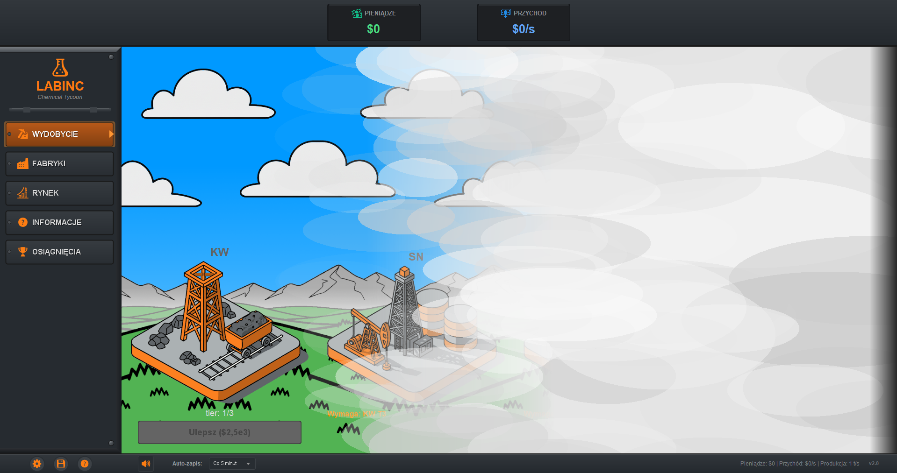
Password Manager
PrototypPrototyp menedżera haseł na Windows i Linux, rozwijany w zespole studenckim. Aplikacja udostępnia sejf danych logowania oraz interfejs do zarządzania wpisami.
- Dodawanie, edycja i organizacja wpisów sejfu
- Współpraca w zespole nad aplikacją desktopową
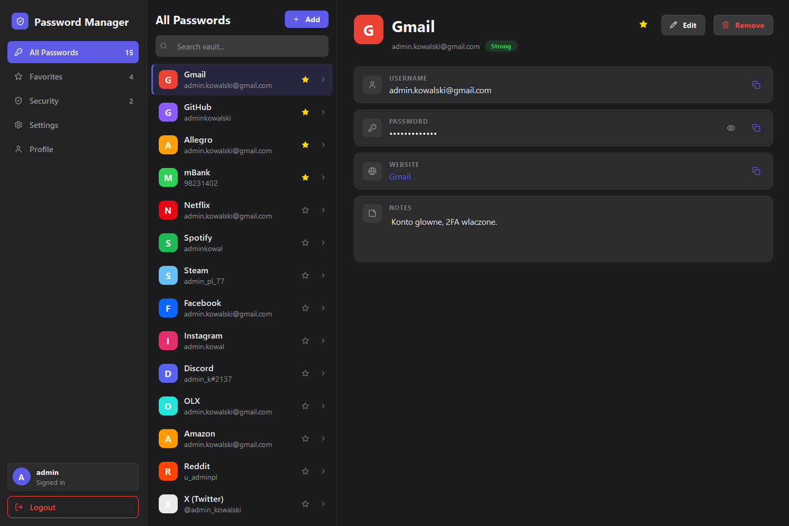
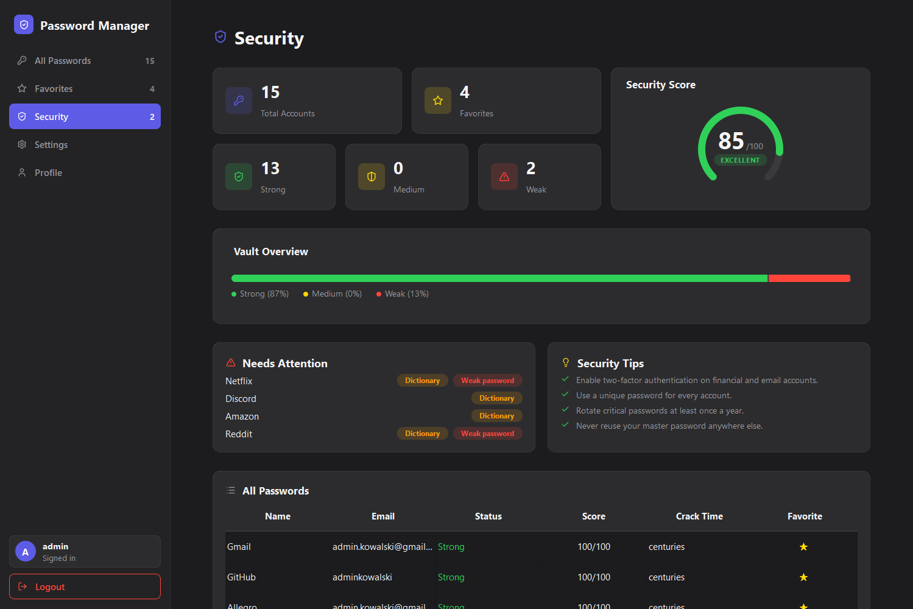
Narzędzia i pozostałe projekty
Więcej moich projektów
Yapper
Aplikacja do dyktowania na Windows, którą wykorzystuję codziennie. Dwa kanały push-to-talk, silniki transkrypcji online i offline oraz automatyczny zapis wyniku do schowka ułatwiają pracę z tekstem.
Panel sterowania radioteleskopem
Frontend i backend aplikacji dla radioteleskopu SeeSky koła SimLE. Odpowiadam za rozwój oprogramowania, w tym interaktywną wizualizację nieba. Kolejny etap obejmuje integrację ze sprzętem i SDR.
Turf Matchmaking
Używany i rozwijanyWyszukiwarka lobby w Krunkerze z filtrami, weryfikacją aktualnych danych i ponawianiem prób dołączenia. Narzędzie używane także przez innych graczy; rozwój uwzględnia ich zgłoszenia i scenariusze użycia.
BlackBox
Projekt własnyTerminalowa gra logiczna w C++: wykrywanie ukrytych atomów na podstawie toru promieni. Projekt obejmuje logikę planszy, symulację ruchu i interakcję z użytkownikiem.
Game Inventory Generator
Generator ekwipunku do gier w stylu Minecrafta. Pozwala wyszukiwać przedmioty w bazie oraz konfigurować zawartość slotów i liczbę elementów.
Strona dla kwiaciarni
W trakcie rozwojuStrona przygotowana dla lokalnej kwiaciarni w ramach rzeczywistego projektu realizowanego przez mały zespół.
Analiza danych giełdowych
Aplikacja terminalowa w C++, która przetwarza dane giełdowe i wyświetla wykresy słupkowe bezpośrednio w konsoli.
O mnie
O mnie
Studiuję Elektronikę i Telekomunikację na Politechnice Gdańskiej, w strumieniu Elektronika i specjalności Komputerowe Systemy Elektroniczne. Jestem na ostatnim, 7. semestrze. Rozwijam aplikacje i narzędzia do automatyzacji, z naciskiem na integrację API, przepływ danych i współpracę modułów. Chcę dalej łączyć rozwój oprogramowania z systemami technicznymi.
Aktualnie skupiam się na:
- Praca inżynierska: uczenie agentów DQN w środowiskach Mario i ViZDoom, rejestrowanie metryk i analiza eksperymentów.
- SimLE / SeeSky: odpowiedzialność za oprogramowanie radioteleskopu, frontend, backend i wizualizację nieba.
- Własne narzędzia: JobManager, Yapper i Turf Matchmaking, rozwijane na podstawie rzeczywistego użycia.
- Korepetycje: matematyka na poziomie liceum, z rysunkami i analogiami dopasowanymi do ucznia.
Po godzinach zgłębiam geografię, tworzę blendy muzyczne, dbam o formę i dietę na siłowni, eksperymentuję z narzędziami AI do separacji audio, albo dopiero zaczynam ogarniać wizualizacje architektoniczne w ComfyUI.
Sposób pracy
Jak buduję z AI
Od wymagania do integracji
- Ustalam problem, użytkownika i oczekiwany rezultat.
- Dzielę system na moduły, dane i interfejsy między nimi.
- Prowadzę implementację z AI i łączę elementy.
- Sprawdzam scenariusze użycia, diagnozuję błędy i poprawiam rozwiązanie.
Wykorzystuję narzędzia AI do implementacji i iteracyjnego rozwoju aplikacji. Określam wymagania, projektuję podział na moduły, łączę interfejsy i weryfikuję działanie systemu w praktyce.
Przykłady i dalszy kierunek
- JobManager: źródła ofert, research i powiadomienia w jednym procesie.
- Yapper: narzędzie, które wykorzystuję codziennie.
- SeeSky: rozwój aplikacji do obsługi radioteleskopu i przygotowanie do integracji sprzętowej.
- Chcę rozwijać się w integracjach i automatyzacji, a z czasem także w systemach wbudowanych i IoT z AI.